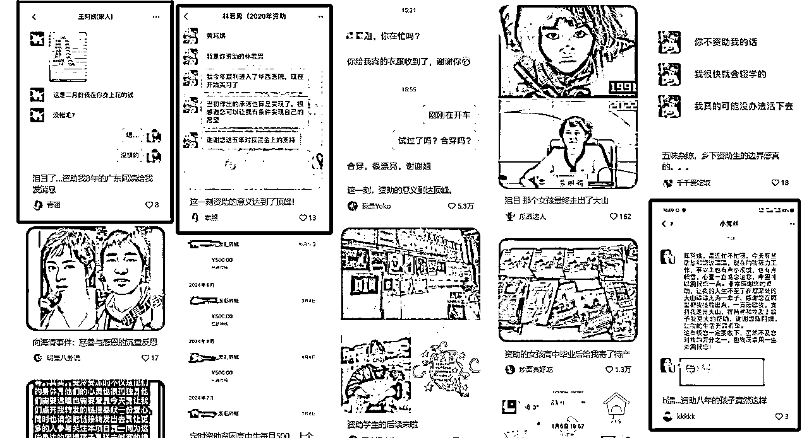

来源：https://r0w01nn96m.feishu.cn/docx/R313d4RQJow7IPx74HrcozI4nte
作为5年老圈友，潜水多年，之前得闲写了一篇关于小红书商单的分享没想到侥幸进了传术师俱乐部，每天看着大家各种关于AI的输出特别兴奋，但是受限于精力有限所以一直没能好好研究，工作中利用AI最多的就是声音克隆和对口型，感觉跟主流团队脱节了一样。昨天刷精华帖，看到一篇小红书聚光，一篇品牌推广，发现还是有圈友对小红书比较感兴趣，分享欲爆棚，那么除了小红书商单、店铺，还有没有适合稍微大一点的团队做的项目呢？
有，并且这个项目投入低，收入缺非常高，一个50人的团队一年保守估计能带来3000W的GMV，利润的话大家可以自行想象。正巧我这里有一组详细数据是618活动刚开始那两天的，就从细节处出发，给大家拆分一下，1个人，0粉账号，1篇笔记，如何带来20W+GMV吧，突然来的兴致所以写的有点粗略，实际上这个数值还是保守的，之前有更炸裂的数据但是我暂时没找到截图，后续找到的话更新上来！
先看一下我这几张聊天记录，聊了很多，只截图了重点：
1、带货率0.3几的意思就是0.3几个赞能带来一个访客，3000个赞的笔记基本就是1W+访客；
2、她连爆3篇，其中一天GMV是15+5+20=40W，有一篇第一天就23W+；
3、别的组的优秀员工一个月GMV是100W+（没有618活动加持）。
为什么把这个数据放到最上面来，因为很多没做过小红书的，特别是没有深耕过小红书评论区的，可能完全没接触过这个转化率，比如我们做抖音的时候，内容好了可能5个点赞1个进店，内容差一点，几千几万赞的完全不进店也是有可能的，所以这个0.3几甚至她们更低的0.1几的进店率真的是太可怕了，并且，评论区做好的话不光转化率高，客单价也是很高的，成组买和单品买GMV能相差几倍。

经常刷小红书的人一定都遭遇过暗广笔记，实际上，吐槽暗广、会鉴别暗广的人越来越多了，但是不得不说，小红书的用户也是不断在更新，永远有人原因相信并为之付费。至于这个概率有多少，我可以给大家一个数据，一篇3000赞的水下笔记能够带来8W+的GMV，这个是实打实的不带一点水分，如果有做小红书推广投放的，应该知道这个数据有多牛批，关键，做到这个数据，这篇笔记的纯成本（代发费用+博主奖励+笔记维护）也就100-500之间而已。
我放几张数据截图，实际上顶峰的时候，有产品一篇笔记有带来过30W+的GMV，不过当时没有拿到截图。
一般2-4人，特别爆的品可能达到10人。人是这个项目的核心，光会抄的话一定做不长久，必须要不断创新才能持续出爆款，所以人的能力很重要。
好用的员工一定是筛选的不是培养出来的，后期培养最多能占到20-40%，不合适的就不要留，留下来大概率培养不出来。做小红书一定要有逻辑、有网感，入职的时候一定要考核员工的笔力，能不能写出来言之有物的东西，这个是后续能否爆文的关键。
根据时下最新形式来定，少的时候可能3篇，多的时候可能10+。数量不是重点，重点是质量，打磨好爆点，不断优化细节，爆率是可控的。
每个团队要求的宽松度不一样，0粉新号也可能爆，有一点点人设的账号爆率更高（这里的人设，就是点进去发了几篇笔记，能看出来是个真人账号，不是真的IP账号）。
小红书账号相对比其他平台精贵一些，一般是上粉+裂变，想要多出爆文，一定是提高裂变比例。
笔记形式是重中之重，一个好的形式，进店比能高于1（1个点赞，1点几个进店），进店比低于20的形式，基本上就被淘汰掉了。
下面我给大家举例一下比较经典的水下推广笔记，品类不聚焦不对标，类型也是大致给个框架放两个典型不细分，大家理性看待。
对……（地域、国货、知名购物点如山姆东来）产生了敬意

一人一个变美/睡眠/省钱……冷知识
她怎么这样了？
不是，没人觉得她很可怕/离谱/恐怖吗？
怪不得富豪/顶流/行长愿意为她……

一人一个……好物
消费降级/大家都穷到什么程度了
地铁上看到的鞋子/发色（染发膏）/黑丝/提臀裤……
背假包丢人吗/同事背假包
保姆/导师/婆婆的边界感（打坏了东西，赔偿/礼物）
发给老公/老妈/老爸的消息发错人了
资助的学生（长大了，送礼物）

室友贴小纸条/高三女儿/妹妹/继女-床底下/书包里/垃圾桶里/厕所发现的
一篇成功的水下笔记，笔记形式非常重要，但是评论区更重要，因为掌握了流量密码笔记爆起来不算难，但是如何让大家信任并且下单，完全是靠评论区的维护。很多人都觉得暗广就是一唱一和的，一眼就能看出来，实际上，好的评论区是先跟你共情，然后再一点一点蚕食你的理智，让你认可产品，你看到的200条评论有可能全是品牌方的账号。
评论区的话就牵扯到具体品牌了，不方便贴图，有兴趣的圈友可以去搜索一些近期的笔记看一下，时间长的评论区可能都掉的七七八八了。